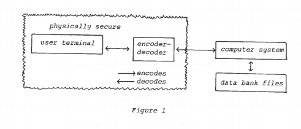
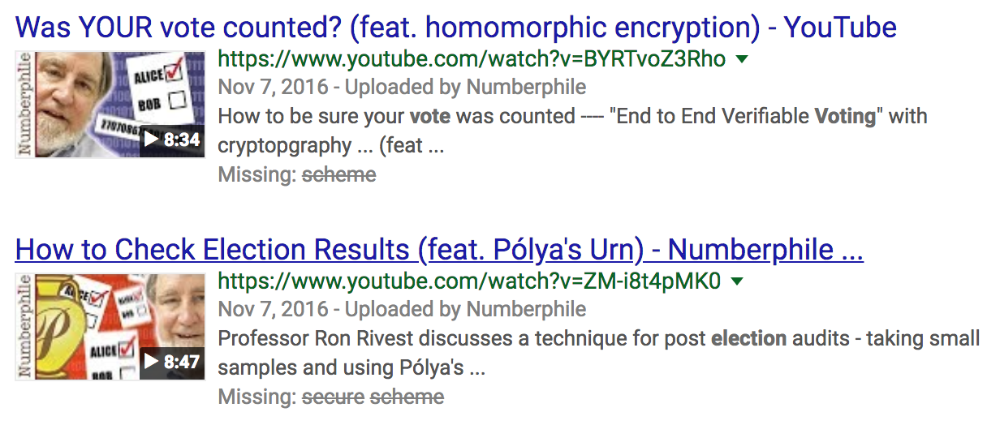
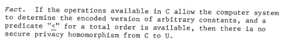
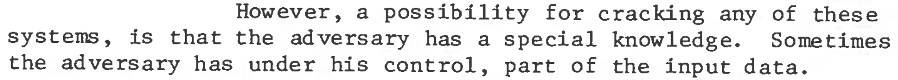
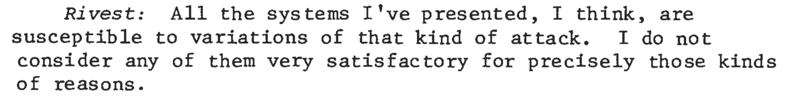

On Data Banks and Privacy Homomorphisms
Ronald L Rivest
Len Adleman
Michael L. Dertouzos
And Dertouzos!
End-to-end Encryption
e.g. LastPass, Apple HealthKit
... an information system working with encrypted data can at most store or retrieve the data for the user
Secure Voting
Homomorphic
"same shape"
f is the encryption function
* is some useful computation
RSA
Encryption:
$$c\equiv m^e \pmod n$$
Decryption:
$$c^d\equiv (m^e)^d\equiv m\pmod n$$
RSA Homomorphism:
$$(m_1 * m_2)^e = m_1^e * m_2^e$$
Security Considerations
Binary Search with ≤
"most severe restriction"
Binary Search with ≤
Enc(x) = (-2)x
Given Enc function, find pt where Enc(pt) = -8
Enc(0) ≤' Enc(pt) = 0 ≤' -8 = false
Enc(10) ≤' Enc(pt) = -20 ≤' -8 = true
Enc(5) ≤' Enc(pt) = -10 ≤' -8 = true
Enc(3) ≤' Enc(pt) = -6 ≤' -8 = false
∎
Choosen Plaintext Attack
Choosen Plaintext Attack
Future (Now)
Fully Homomorphic Encryption scheme
"Fully":
Gentry (2009)
Semantic Security
See Also: